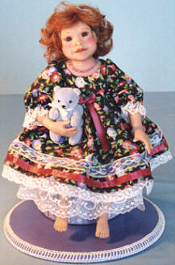

"Julie" Julie is a twelve-inch seated doll with a Cernit head, hands, and feet, and a cloth and wire armatured body. She sits on a padded seat, dangling her toes, and never goes anywhere without her tiny two-inch bear. She has hand beaded jewellery, and is fully poseable.
Julie was part of an auction to benefit the Pat Nelson Doll Street Scholarship.
|